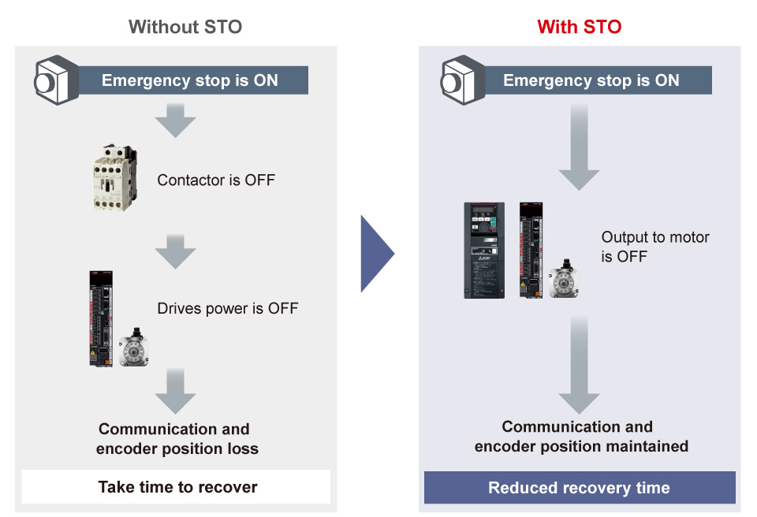
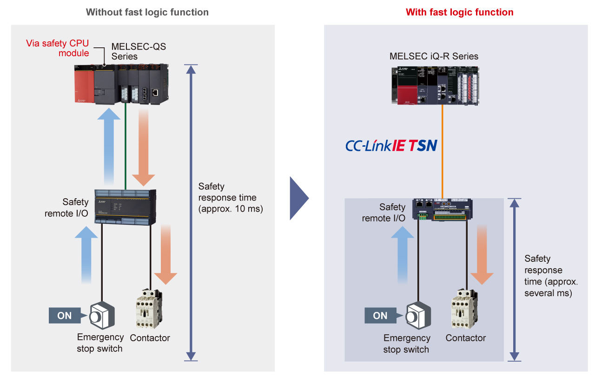
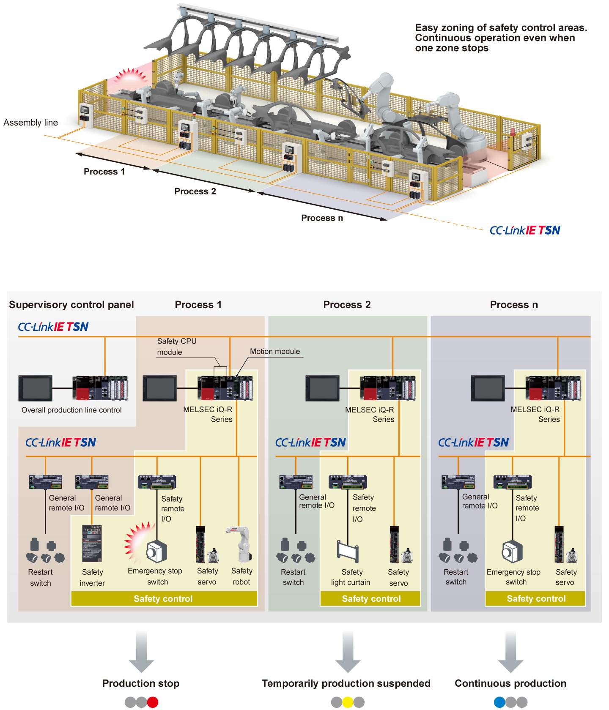

Controllers MELSEC iQ-R Series Product features -Solution-

Enhance factory safety
Need for machine safety
Workplace safety has relied on safety training. However, safety devices are increasingly required to assure operator safety independent of human intervention.
Safety from human intervention
Issue 1
Operator's inattention and work errors directly lead to accidents.
Issue 2
Workplace safety depends on veteran operators and ensuring safety is difficult due to generational changes.

Safety devices assure safety independent of human intervention
Point1Ensure operator safety by separating an operator and a machine with safety devices
Food processing machine
If a mixer starts running when an operator puts one's hand in to check the product or remove a foreign object, the operator can get caught in the mixer.
- A safety guard separates the operator from the mixer to ensure operator safety
- By combining the MELSEC-WS Series safety controller with a door lock switch and safety guard, an interlock can be created so that the mixer will not run while the safety guard is open, preventing the operator from accidentally getting one's hand caught in the mixer

Point2Coordination between servos, inverters, and robots enhance safety and productivity
- Connecting safety drives such as servos, inverters, and robots with the MELSEC iQ-R Series safety CPU modules, various functions complying with the international safety standard such as STO (Safe Torque Off) and SLS (Safely-Limited Speed) can be used
- STO (Safe Torque Off) ensures safety of an operator without shutting off driving energy using a device (such as contactor) outside the drive, reducing time to recover

Point3Shorter safety response time reduces installation space
- The I/O combined remote module with safety functions can quickly shut off safety output without going through the safety CPU module (fast logic function)
- Since safety response time can be substantially reduced, distance between the emergency stop switch and hazard source can be shortened, reducing installation space

Point4Ensure safety without compromising productivity even in the large-scale system
- Integrating the MELSEC iQ-R Series safety CPU module and safety drives into CC-Link IE TSN ensures safety on a large-scale system such as an automotive assembly line
- If a hazard occurs in the process 1 and a machine is stopped, a machine in the process 2 temporarily stops. However, in the subsequent processes, production will continue without stopping
- Emergency stop of the machine can be enabled per process, avoiding the entire system shutdown and ensuring both safety and productivity
